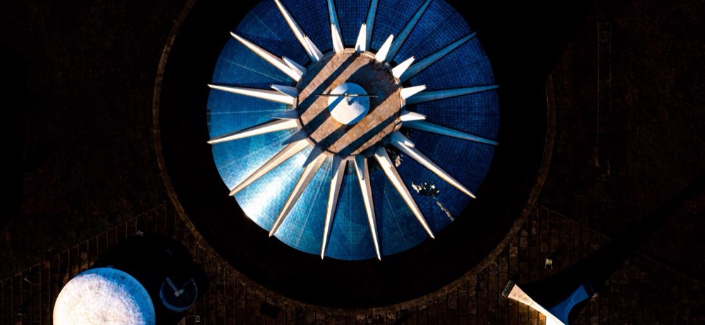
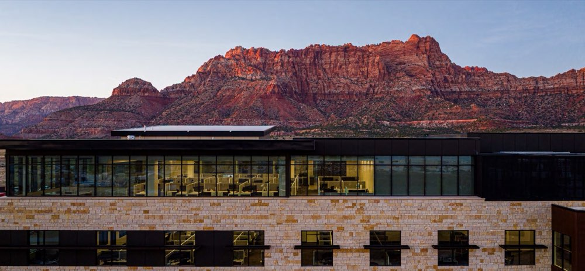
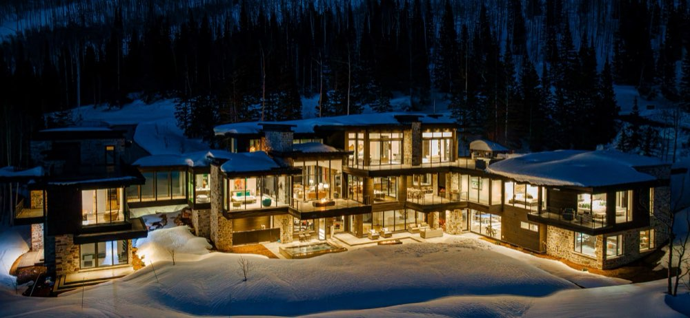
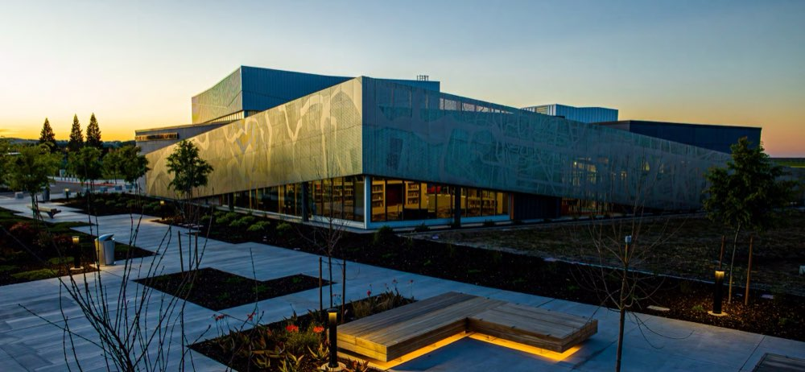
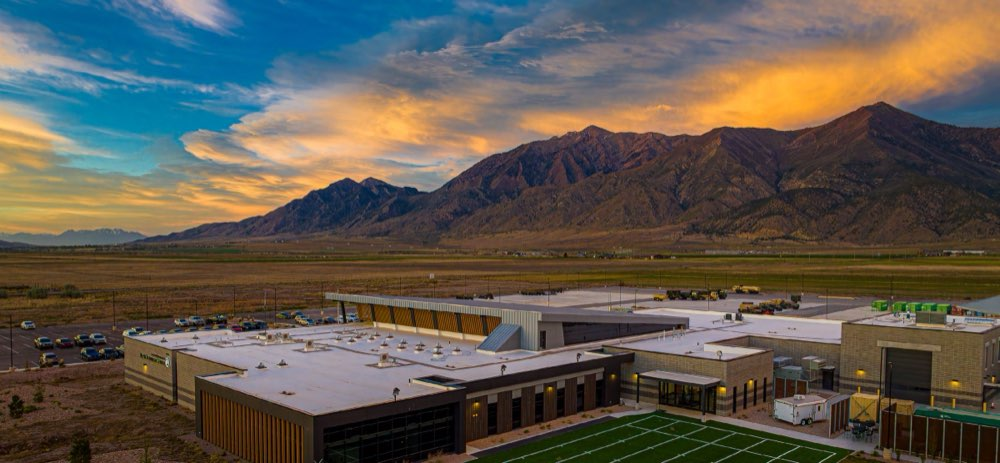
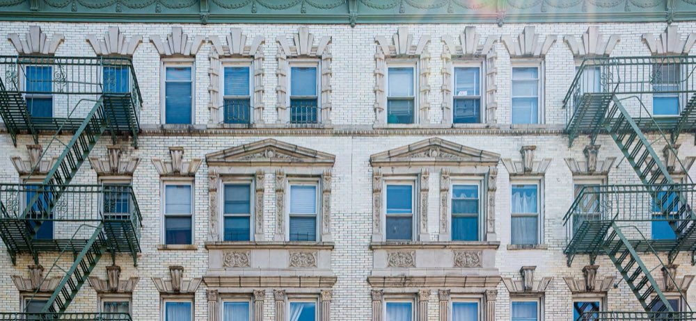
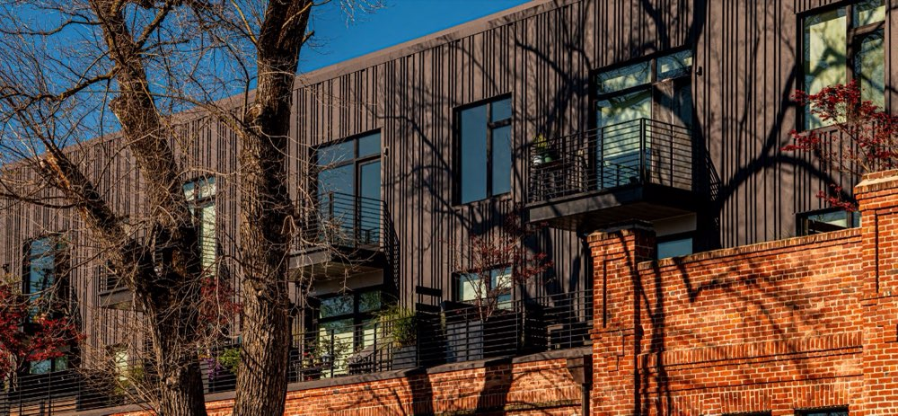
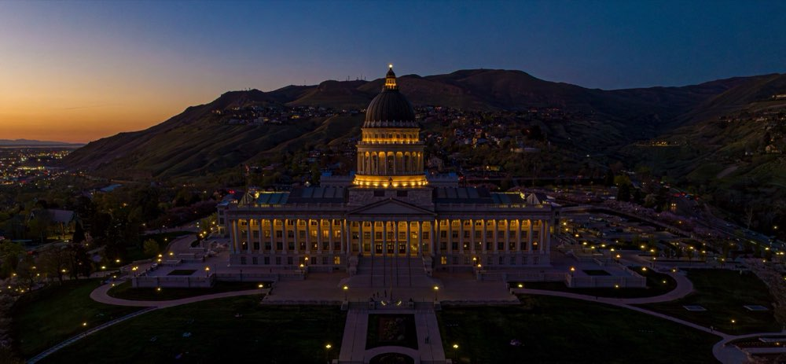
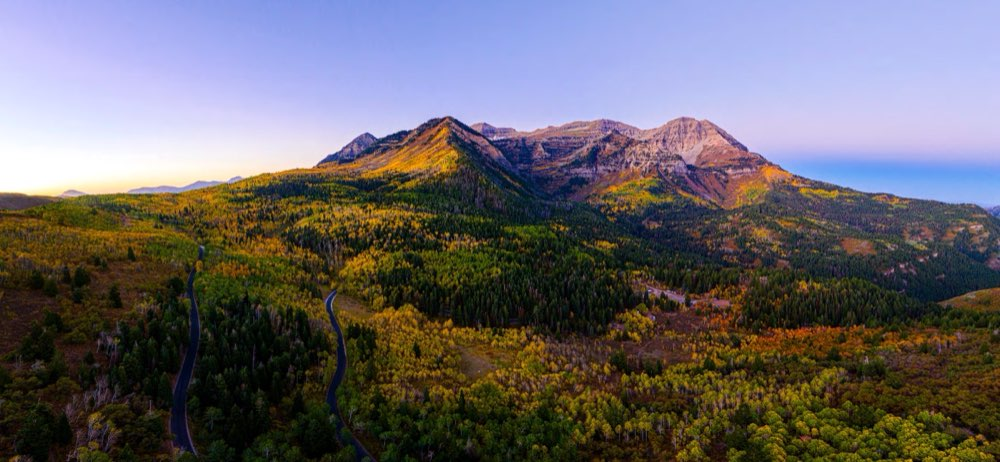

Work
Architecture, interiors, aerial and landscape — Brasília to the American West.
-

Architecture / Aerial Brasília -

Commercial Desert Office Campus -

Residential / Interiors Mountain Residence -

Civic Civic Library -

Civic / Commercial Valley Facility -

Cities New York -

Residential / Urban City Fabric -

Aerial Aerial Perspectives -

Landscape The American West
No projects in this category yet.